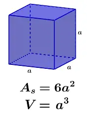

El cubo es una de las figuras tridimensionales más conocidas y es un tipo de poliedro regular.
Está formado por 6 caras cuadradas iguales, 12 aristas y 8 vértices.
Todas sus caras son congruentes, lo que significa que tienen el mismo tamaño y forma. Además, los ángulos entre las caras son rectos (90°).
Podemos encontrar cubos en muchos objetos de la vida cotidiana, como:
- Dados de juegos
- Cajas pequeñas
- Bloques
El cubo pertenece a la familia de los prismas rectos, ya que sus caras son paralelas dos a dos y sus aristas laterales son perpendiculares a la base.
Partes del cubo
- Caras: 6 (todas cuadradas)
- Aristas: 12
- Vértices: 8
Fórmulas
Si a representa la longitud de una arista, entonces:
